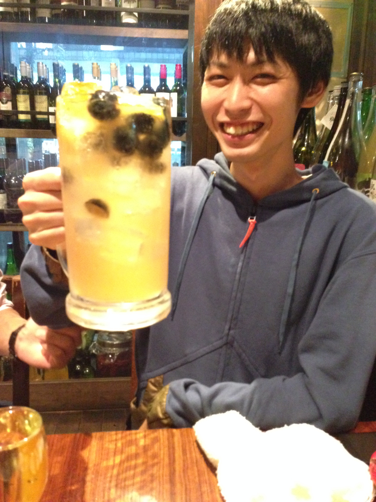
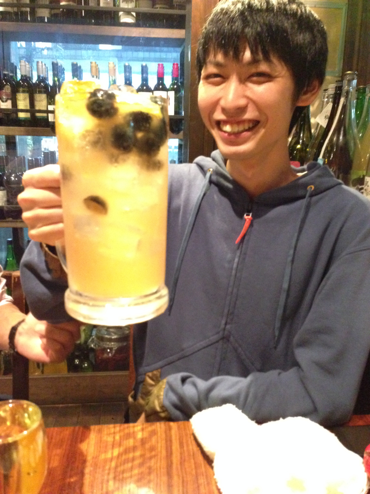

にぎやかに飲むなら…
みんなでわいわい楽しく賑やかに飲みたいあなたにはFUNKY原田がおすすめです。
お店の外観は一見静かでオシャレなBARですが、中に入ると非常に和やかな雰囲気で賑わっています。お店の名物である【ファンキーハイボール】や【ファンキー冷奴】はボリューム満点で盛り上げること間違いなし。料理もお酒も全体的にボリューミーですが価格はかなり抑え目に設定されていますので飲み会にもピッタリです。運が良ければFUNKYな原田のおばちゃんがサービスしてくれるかも？
 

しっぽり飲むなら…
大人な雰囲気のお店でしっぽり飲みたいあなたにはMOTOWNがイチオシです。
店内に入ると煌びやかな装飾や照明が目を引き、まさに大人の社交場のようです。カウンター席、テーブル席それぞれ違った趣があるので、1人でも、お友達とご一緒でも、恋人とのデートにもオススメなお店です。ハロウィーンやクリスマスなどのイベントシーズンにはお店の内装も変化するので、時期を狙って行くのもまた面白いかもしれません。オリジナルカクテルの種類が非常に豊富で、総じて高いクオリティなので是非お試し下さい。


隠れて飲むなら…
みんなが知らない、隠れ家的なお店で飲みたいあなたにはブーガルーカフェがおすすめです。
八王子駅南口、徒歩数分の場所にお店を構えているのですが、一見平屋建ての物置のような印象で初めて見たときはとてもですがBARだとは思えないでしょう。お店に入ると肩に刺青を入れたイカついマスターが出迎えてくれますが非常に温厚な方なので安心してください。外観からからは想像できないほど綺麗な店内で、いつまでもそこでお酒を飲んでいたくなるような不思議な魅力があります。普通のBARには飽きてしまった方にもおすすめのお店です。